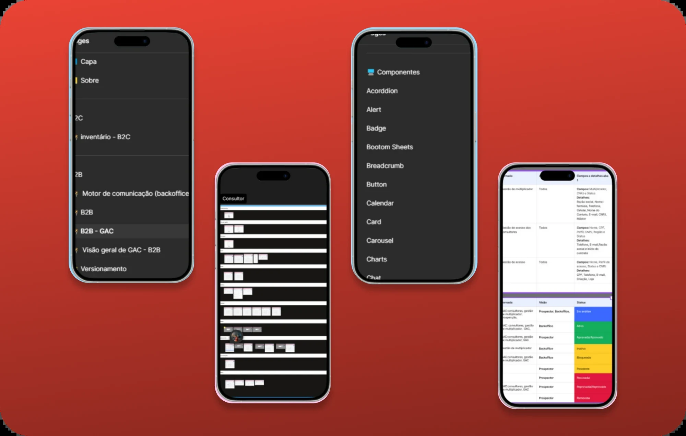
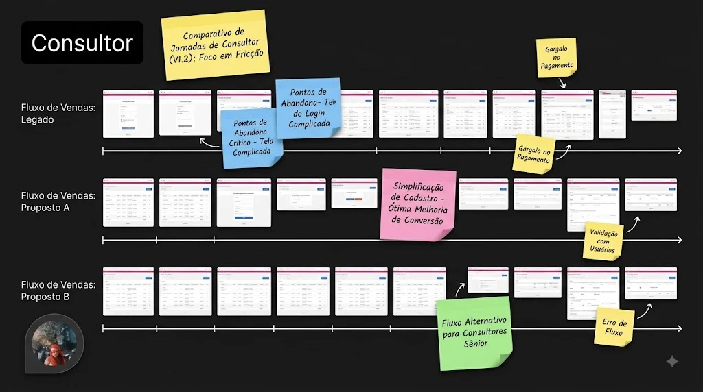

Eu gosto de pensar que esse case foi o começo de um treinamento de um olhar voltado pra processo, consistência e mapa de produto. Que depois serviu de bagagem pra me ajudar a criar o Sistema de Inteligência de Produto, que, se você já viu, pode até achar que é o mesmo case. Mas não é, e a distinção importa.
O Sistema de Inteligência cuida de preservação de entendimento: por que aquele botão existe, qual decisão levou a ele, o que a gente ainda não sabe.
O Design Ops cuida de consistência de execução: quais botões existem, se eles podem ser reduzidos, se estão iguais entre fluxos parecidos. Um cuida do porquê. O outro cuida do quê.
Este é o do quê. → Veja o Sistema de Inteligência pro porquê.
Ao longo do tempo, eu reconheci um padrão triste e familiar nas várias iniciativas de documentação que já tinham sido tentadas: a maioria tinha sido abandonada. Documento que ninguém mantém é documento que envelhece e vira mentira, então as pessoas paravam de confiar e paravam de usar.
O resultado prático doía no dia a dia. Uma regra de negócio podia viver em três lugares diferentes ao mesmo tempo, e nenhum deles era a fonte da verdade. Pra confirmar uma informação, você caçava arquivo por arquivo. E como o produto tinha muitas jornadas com estrutura parecida (só de empréstimo consignado eram cinco, seis jornadas diferentes, tocadas por pessoas diferentes), a inconsistência entre elas era inevitável: cada uma resolvia o mesmo problema de um jeito, porque ninguém tinha como ver todas ao lado da outra.
Eu estava fazendo um curso de Design Ops na época, e ficava pensando em como aplicar aquilo no meu contexto real. Lá, em 2023/2024, a palavra Design Ops como a gente conhece ainda estava se popularizando, e a imagem que se tinha era mais ou menos: um time maduro dedicado só a Ops, que decidia como os processos deveriam ser feitos, ou iniciativas vindas apenas da liderança. O meu contexto não tinha nada de maduro: uma plataforma criada havia pouco tempo, com jornadas específicas demais pra consumir 100% da documentação do que já existia em outros canais.
Foi aí que a ideia apareceu: e se a documentação, em vez de ser só um depósito que a gente atualiza depois, fosse o lugar onde a gente compara as jornadas antes de construir?
Um arquivo Figma estruturado por segmento: uma área pra regras de gestão de acesso, uma pra produtos B2B, uma pra B2C. E dentro de cada segmento, a peça central: uma visão comparativa lado a lado de jornadas semelhantes.
Em vez de abrir uma jornada, fechar, abrir a próxima, fechar (e nesse processo esquecer o que a primeira fazia), eu colocava o fluxo A e o fluxo B na mesma tela, lado a lado. As cinco, seis jornadas de consignado, visíveis juntas. Assim dava pra bater o olho e ver: essa jornada trata o erro de um jeito, essa outra trata de outro. Por quê? Deveria? Dá pra unificar?
E ao lado das jornadas, espaços pra anotar as regras de negócio e as decisões de conteúdo. A informação e o motivo dela, no mesmo lugar onde você está comparando.

Documentar jornada uma por uma é fácil, e é o que quase todo mundo faz. O problema é que consistência é uma propriedade que só existe entre as coisas — você não consegue ver inconsistência olhando uma jornada isolada. Ela só aparece quando duas jornadas parecidas estão no mesmo campo de visão.
Foi por isso que a visão comparativa foi a decisão central, e não um detalhe de layout. Ela é o que transforma um monte de documentação em uma ferramenta de consistência. Ver junto é a função.
Eu propus e pilotei isso sozinha. Comecei pelas jornadas que eu mesma tocava, montei o modelo, e validei com a liderança, que gostou.
E aí bati num limite que, no fundo, era uma boa notícia: as jornadas que eram minhas já estavam mapeadas. Pra continuar, eu precisava de acesso às jornadas de outras pessoas, justamente pra poder compará-las. O valor da ferramenta dependia de ela cobrir mais do que o meu pedaço.
Então o projeto subiu pro time. Outras UX Writers entraram, novas jornadas foram incluídas. O que começou como o meu jeito de organizar o meu trabalho virou infraestrutura compartilhada. As iniciativas anteriores morriam porque dependiam de uma pessoa. Essa sobreviveu porque deixou de depender de mim.
O impacto concreto e verificável é o mecanismo. Antes, levantar uma informação durante uma reunião era impossível — você anotava pra "confirmar depois" e marcava uma segunda reunião só pra trazer o que faltava. Com a documentação centralizada, essa informação já estava levantada: uma tela de exceção, um cenário de erro que já existia em outra jornada, eu trazia na hora. A segunda reunião simplesmente deixou de ser necessária.
Em números que o time me deu quando perguntei sobre a mudança: uma busca de informação que levava cerca de uma hora passou a levar quinze minutos. Um projeto que levaria dez dias passou a levar seis, porque boa parte do levantamento já estava feito.
As porcentagens que resumem isso (algo como 40% menos fricção entre design e desenvolvimento, features saindo 30% mais rápido) são estimativas levantadas em conversa com o time, não medição instrumentada.
Foi criado e adotado pelo time enquanto eu estava no produto. Sobreviveu até pelo menos pouco depois da minha saída, quando virei Product Designer. Hoje eu não tenho visibilidade se ainda usam.
Mas o teste que importa ele passou: sobreviveu à minha ausência. Documentação que continua viva depois que quem criou saiu é exatamente o oposto das iniciativas que morriam antes. Pelo menos por um tempo, deixou de depender de uma pessoa só: que era o problema desde o começo.